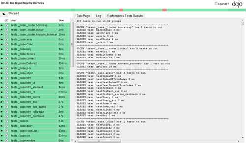

作者 王沛发布于 2010年12月9日 上午12时0分
社区Java主题RIA标签专栏 , Dojo , Dojo之美
http://www.infoq.com/cn/articles/wp-dojo-ria
受邀写这样一个专题，非常乐意。这也让我看到了infoQ是一个真正以技术为导向的社区，不追求最热的话题，只看技术的价值，很欣赏。
2005年5月，Ajax概念被第一次提出。而在此一年之前，Dojo框架已经写下了第一行代码。作为Ajax之前的“Ajax”框架，Dojo官网至今一直用着朴素的名字来定义自己：javascript toolkit。看上去仅仅是个工具集，而事实上它却有框架的力量，推进着大型Web2.0应用的开发。这也是Dojo一直给人的印象，低调、沉稳，却很强大。如果你仅仅想让WordPress页面的下拉菜单效果更加酷，我不反对用JQuery；但如果你需要以Web2.0技术为基础去架构一整个应用，那么Dojo一定是你的最佳选择。
为什么选择Dojo？
看完前一段，一定会有人说，Dojo给人的印象没有强大，只有庞大，难用以及糟糕的性能。这完全可以理解。Dojo文档的缺乏，社区的不活跃，相对严格的设计模式，让很多初学者难以上手，于是转投用起来更加友好的其它框架。这是一个偏见导致的恶性循环，造成用Dojo的人始终不多。而消除偏见，正是这个专栏的目的。
如果我们相信大公司CTO的眼光，不妨先看看Dojo的这些用户：
http://www.infoq.com/resource/articles/wp-dojo-ria/zh/resources/image1.bmp
这只是Dojo用户的一小部分，实际用Dojo的公司更多，甚至中国的腾讯，百度。如果觉得这些公司的技术离自己很远，那么Java的Struct 2框架内置Ajax模块用的是Dojo，也许更能说明Dojo的价值。
为什么选择Dojo？这个问题其实很大，也许当你看完整个专题系列，心中自有选择。但在这里，我还是想先简单列出一些Dojo有吸引力的特性：
| 特性 |
描述 |
| 优秀的面向对象体系 |
类定义，多继承，基类方法调用，在Dojo中都设计的自然而合理。良好的OO体系，是大型应用的基础。 |
| 命名空间 |
和Java一样的命名空间管理，对应文件夹层次结构，让我们能有效管理大量源代码以及他们的依赖关系。 |
| Dijit界面控件系统 |
Dijit是Dojo的最大特色，它很容易创建和使用，方便了界面模块化开发且易于维护；基于内容构建的天然特性更方便创建SEO优化的Ajax页面。 |
| 严格的设计模式 |
很多人说Dojo难用，严格的设计模式是一个重要原因。很多东西也许第一眼看上去不是很直观，但一但掌握，用这种风格写出的代码会非常容易扩展和维护。 |
| 灵活的单元测试框架 |
DOH是Dojo自带的测试框架，除了标准的函数级别单元测试，你还能用它自动控制鼠标移动和点击来进行自动的界面测试。而且DOH同样可以用于非Dojo框架的其它Ajax测试。 |
| 强大的构建工具 |
Dojo的Build工具其实有很多限制，需要遵循一定的编码规范，这为丰富的功能提供了前提。它能自动处理文件依赖关系，自动分离i18n文件，自动嵌入模板文件，让交付的系统运行的更快。 |
性能很难对比，即使相同的一个Calendar控件，功能都会有差别。这里从2个点来看性能问题：DOM节点的查询速度，以及Dijit展现的速度。前者大家的功能完全相同，可以有个比较；后者则专属Dojo，看看绝对的性能。
（1）节点查询速度
JQuery最早引入基于CSS选择器进行DOM节点查找的机制，也是其最大特征。如今成为了各个框架都具备的功能。这应该算是最能体现Javascript算法设计的一点。下图来自于：http://blog.creonfx.com/javascript/mootools-vs-jquery-vs-prototype-vs-yui-vs-dojo-comparison-revised
是各个框架查询速度的对比，时间越少表示性能越好。虽然用的版本比较老，但在查询的实现上各个框架都没有太大的变化。
http://www.infoq.com/resource/articles/wp-dojo-ria/zh/resources/image2.bmp
一图胜千言，Dojo的性能优势一目了然。如果你想亲自做这个测试，可以访问如下地址。
http://mootools.net/slickspeed/
（2）Dijit展现速度
Dijit是Dojo的界面展现体系，性能好坏直接决定着页面的响应速度。在声明方式下，Dojo需要遍历页面Html找到所有的Dijit进而创建并展现它们。这个过程比你的想像要快的多，Dojo的ThemeTester是一个很好的例子：
它的访问地址是：http://archive.dojotoolkit.org/nightly/dojotoolkit/dijit/themes/themeTester.html
http://www.infoq.com/resource/articles/wp-dojo-ria/zh/resources/image3small.bmp
此页面包含了399个Dijit，全部通过声明方式创建。在FireFox3.6下总共的展现时间是2000ms左右，平均一个Dijit用时 5ms。页面中包括了多个Tree，多个TabContainer，多个Menu以及富文本编辑器这样的复杂Dijit。因此，如果你发现你的界面远没有这么复杂，却展现的很慢，通常需要检查自定义的Dijit设计的是否合理。
综上所述，Dojo本身，包括自带的Dijit，拥有着相当不俗的性能。至于如何写出高性能Dijit，正如如何写出高性能的JQuery插件，需要的是经验和积累。
性能是软件开发的一个永恒话题，无处不在。没有一个统一的解决模式，桌面程序也好，Web程序也好，要提高性能，合理的设计、高效的算法永远是解决问题的王道。而Dojo在这一点上，绝不会是你的绊脚石。
开始使用Dojo
作为专栏的开篇，这里并不会详细介绍很多具体的技术细节。而是通过几个重要Dojo相关网站的介绍来了解Dojo，如下表所示：
| 网站 |
介绍 |
| 本质上官网总是没有太多实际性的作用，作为一个产品门户，起到总体介绍的作用，内容相对很少，而且个人觉得Dojo官网的设计实在差强人意，很多过期内容，而且导航非常不便。 |
|
| 在这里可以下载到所有的Dojo稳定版本，每个版本都有几个不同的包可供下载，以dojo1.5为例： dojo-release-1.5.0.zipDojo标准包，已经压缩，可供生产环境直接使用。dojo-release-1.5.0-src.zip Dojo源代码，包含测试，build工具，开发环境使用，方便调试。另外这个包下面包含了所有的test case，通过它们能快速掌握各个控件的用法。dojo-release-1.5.0-docs.zip Dojo离线文档，内容与http://api.dojotoolkit.org基本相同，但没有在线的使用方便，一般直接看在线文档即可。dojo-release-1.5.0-demos.zip Dojo功能演示，其实这是非常直观的一块，可以看到很多很酷的用法，每个Demo都有具体的代码示例。下载解压后放到dojo同级目录即可使用。dojo-release-1.5.0-shrinksafe.zip Dojo的build工具，通常专用于Dojo，已经包含在src包里，如果要用于其它的Javascript程序打包，可单独下载。 |
|
| 经过改版，最近刚刚推出。相对于旧版本已经方便很多。可以查到所有类的属性，方法，事件的介绍和使用示例。 |
|
| 在这里能找到几乎所有的类或方法的使用guide，相当于Dojo的Wiki，内容不断更新。通常在google中搜索Dojo API，来自Dojo Campus的是最有价值的。 |
|
| 这是来自Dojo创建者的博客，里面会有Dojo相关的技术文章，也会有业界的一些观点文章。 |
|
| 近期比较活跃的Dojo中文博客，包括原创内容以及国外Dojo技术文章翻译。翻译部分基本会同步于Sitepen的文章。 |
除了上述网站之外，有一个快捷学习使用Dojo的方法，就是看Dojo Src包下面的test case。在源代码包下面（例如dojo-release-1.5.0-src.zip），每个命名空间下都会有一个tests目录，这里面包含了每个控件或者工具类的各种用法的实例，通过它们能够快速上手它们的用法。例如：
http://yourhost/dojoroot/dijit/tests/test_Dialog.html，这个页面就展示了Dialog的各类用法。任何一个Test Case都是一个完整的Dojo环境，你完全可以模仿它写出自己的第一个Dojo程序。
从对象、事件、闭包看dojo对javascript的扩展
和任何一个Ajax库一样，Dojo对Javascript语言本身也做了扩展，例如用dojo.forEach来方便的遍历一个集合。因此如果熟悉了一个框架，上手Dojo基本上只需要熟悉不同的API命名方法，dojo的这些功能基本都在dojo命名空间下，通过 dojo.doSomething()的形式来调用，或者dojo.string.doSomething()这样的形式。
在这个功能上我们从3个方面的例子来看dojo。
（1）面向对象支持
开始写代码之前，我们先为源代码位置指定一个命名空间，用如下代码：
dojo.registerModulePath('com.infoq', '../infoq');
第一个参数表示你的根命名空间，第二个是相对于dojo.js的目录。这样整个目录结构如下：
/script /dijit /dojo /dojox /infoq
你可以注册多个命名空间到多个文件夹，方便组织源代码文件。这个结构和java非常类似，甚至比java少了com/infoq这样的多余目录。下面的代码就定义了一个Dojo类，这个类文件位于infoq/demo/Class1.js。代码中示例了继承，基类方法调用，构造函数的使用。
dojo.provide('infoq.demo.Class1'); //dojo特有，表明这个文件所属命名空间 dojo.require('infoq.BaseClass'); //引入基类定义 dojo.declare('infoq.demo.Class1', [infoq.BaseClass], { //类定义 constructor: function(){ //构造函数代码逻辑 } ,doSomething: function(){ //调用基类infoq.BaseClass的doSomething方法 this.inherited(arguments); } });
示例中演示了Dojo的类定义，继承，基类方法调用的方法。可见其过程与传统面向对象的编程非常类似。Dojo中通常一个类就是一个文件，并且文件路径和dojo.provide声明的类路径严格对应。
（2）事件支持
Dojo事件系统最大的特点是统一了DOM节点的原生事件和自定义事件，例如：
var handler = dojo.connect(obj, ‘onLoad', callback);
这个onLoad可以是DOM节点的原生事件，也可以是obj对象的一个纯javascript方法，调用onLoad的参数也会传个 callback方法。dojo.connect函数返回一个handler，可以用dojo.disconnect(handler)的方式取消一个事件的绑定。
（3）闭包及dojo.hitch
闭包是javascript的重要特色，它让函数回调的定义变的非常便捷。当年看到Prototype提供的Function.bind方法惊为天人，dojo中也提供了同样功能的函数：dojo.hitch。假设某对象的定义如下：
var obj = { doSomething: function(arg1, arg2, arg3){ //code } };
那么要把obj.doSomething进行一个闭包封装可以使用：
var callback = dojo.hitch(obj, 'doSomething', 'arg1Value');
那么执行：
callback('arg2Value', 'arg3Value');
完全等价于：
obj.doSomething('arg1Value', 'arg2Value', 'arg3Value');
可以看到dojo.hitch甚至可以连接2个部分的参数传递，这个功能非常有用。
忘掉$(id)，看Dijit中如何使用DOM节点
$(id)曾经是Prototype框架的特色，也是大家最为津津乐道的常用函数。后来各个框架均提供并加以扩展（JQuery中用于基于CSS选择器的节点选择）。dojo中也有一样的函数：dojo.byId(id)。但与其它框架对于$方法的不可或缺相比，dojo.byId使用非常少，因为它意味着对DOM节点的紧密耦合。Dojo中严格的模块化设计思想极力避免紧密耦合的出现。
开发中用到DOM节点时，通常和UI相关，而Dojo中所有对UI的操作和渲染都抽象成Dijit的形式，对于复杂的UI结构，可以嵌套使用Dijit。创建Dijit有2种方式，一种基于已有DOM节点，另一种基于模板。
（1）使用已有DOM节点创建Dijit
首先自己定义一个Dijit：
dojo.declare('infoq.demo.SomeDijit', [dijit._Widget], { //dijit code });
然后在页面中以声明方式创建实例：
<div dojoType="infoq.demo.SomeDijit" sampleProp="sample"></div>
那么在Dijit中的代码就可以用this.domNode来引用到这个节点。而不再需要通过dojo.byId的方式来获取DOM节点的引用。
（2）使用模板创建Dijit
顾名思义，模板定义了一个Dijit的骨架，假设有如下Dijit定义：
dojo.declare('infoq.demo.TemplatedDijit', [dijit._Widget, dijit._Templated], { templateString: dojo.cache('infoq.demo', 'templates/templated_dijit.html') intro: 'demo template introduction' //dojo.cache用于直接获得指定文件内容，会在build时自动嵌入代码 //templateString定义了一个dijit的模板内容 //other code });
这就创建了一个基于模板的Dijit，模板文件位于script/infoq/demo/templates/templated_dijit.html（前面我们已经注册script/infoq对应于infoq命名空间）。假设模板文件内容如下：
<div> <img src='xx.png' dojoAttachPoint='imgAvatar'/> <p dojoAttachPoint='introductionNode'>${intro}</p> </div>
那么在页面上的Dijit就会以这个模板为骨架。在dijit代码中，可以使用this.imgAvatar来使用img节点。这里的 dojoAttachPoint就是模板dijit中的特有属性，用于获取模板中包含的DOM节点或者Dijit的引用。例子里模板文件中的${intro}则会直接被替换为实例对象的intro属性。
测试及Build工具
测试及Build是完整开发的重要组成部分，如果大家感兴趣，在后续系列中将详细介绍这两块内容，这里作一个简单的介绍：
（1）测试工具：D.O.H
DOH全称是Dojo Objective Harness，是一个基于Dojo的单元测试工具，具有如下特点：
既能够测试基于Dojo框架的Ajax应用，也能够测试基于非Dojo框架的Ajax应用（老版本只支持Dojo框架的）。最新版本现在是0.9（独立于Dojo版本）。而且是08年就发布的，可见其还是相当稳定和够用的。能够将多个单元测试用例（多个javascript，html）文件，在同一个界面上集中展示测试结果。既可以在浏览器中运行测试，也可以用命令行的方式来运行测试，命令行方式仅限于纯javascript代码的测试。提供基于浏览器的Robot插件，用于模拟鼠标键盘操作，方便界面测试。
大家可以通过http://yourhost/dojoroot/util/doh/runner.htm来运行Dojo自身的单元测试，体验其强大的功能。下面是其运行结果截图：
 http://www.infoq.com/resource/articles/wp-dojo-ria/zh/resources/image4small.bmp
（2）Build工具：Shrinksafe
ShrinkSafe同样独立于Dojo，但针对Dojo特别优化，用于打包和压缩Ajax应用。其主要提供了如下功能：
自动处理源文件的依赖关系，打包多个文件到一个文件压缩javascript代码，去除注释，无用空白等处理及打包i18n文件自动嵌入dojo.cache引用的文件（如dijit的模板文件）
通常经过build过的代码，体积会减少30％左右，并且因为将多个文件打包成一个，大大加快了浏览器加载速度，让交付的应用程序运行的更快。
这就是Dojo
看完上文，相信大家对Dojo有了一个大概或者更深入的了解。一直以为Dojo是一款强大的工具，熟练掌握能让你的开发事半功倍。而Dojo的难用让它的用户相对较少，尤其是在国内。本文的目的正是希望通过对Dojo的系统性介绍，消除大家对Dojo的偏见，或者帮助那些想用Dojo的人用好 Dojo。
如果大家有任何问题或建议，或者希望看到哪些具体的Dojo功能介绍，欢迎留下评论，会在后面的文章中针对热点问题进行详细介绍。
{kind=link}